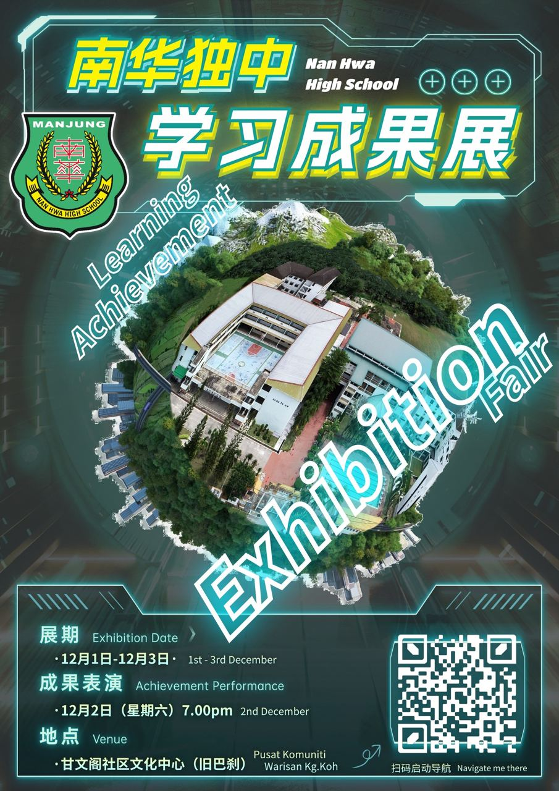

南华独中学习成果展 @
南华独中学习成果展 @
甘文阁社区文化中心（旧巴刹）
◎展期 Exhibition Date：
12月1日 - 12月3日 · 1st Dec - 3rd Dec
◎成果表演 Achievement Performance：
12月2日（星期六）· 2nd Dec (Sat) · 7.00 pm.
◎地点 Venue：
甘文阁社区文化中心（旧巴刹）Pusat Komuniti Warisan Kg. Koh
曼绒南华独立中学于12月1日至12月3日（星期五至星期日）于甘文阁社区文化中心（旧巴刹）设立为期三天的“南华独中学习成果展”，现场除了展示学生于2023年期间在校本与选修课的学习成果之余，于12月2日（星期六）晚间7点设有联课成果表演，欢迎社会民众前来见证。
“学习成果展”设有十大展区，即
①中华文化艺术展、
②趣味科学实验展、
③咖啡与甜点艺术展、
④音乐展、
⑤木工手艺展、
⑥Robotic展、
⑦艺术成果展、
⑧摄影艺术展、
⑨广告设计展、
⑩超轻黏土艺术展等…
若有社会民众对南华独中的办学愿景、方针及课程相关资讯感兴趣，亦可亲自前往咨询台询问。此外，12月2日（星期六）晚间7点的成果表演将有本校重点学会及艺术表演团体参与演出，即是华乐团、醒狮团、舞蹈团、管乐团、廿四节令鼓…
#学习成果展 #校本课程 #选修课程
#学会 #团体 #成果表演
#甘文阁社区文化中心 #南华独中 #曼绒 #实兆远
